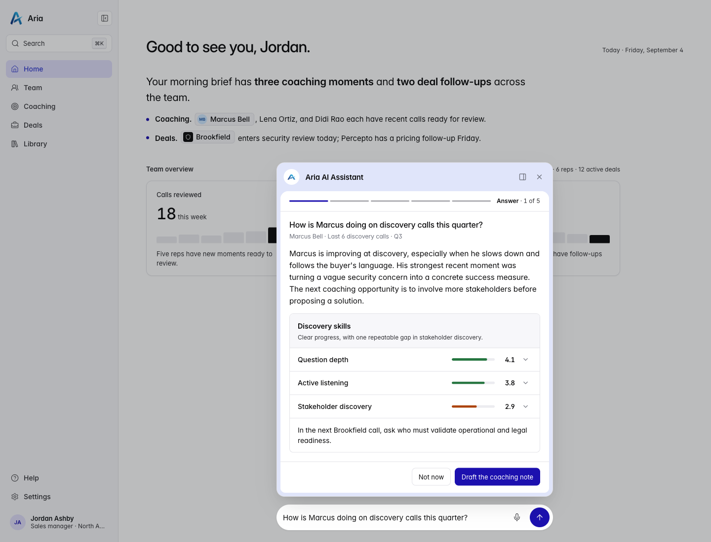
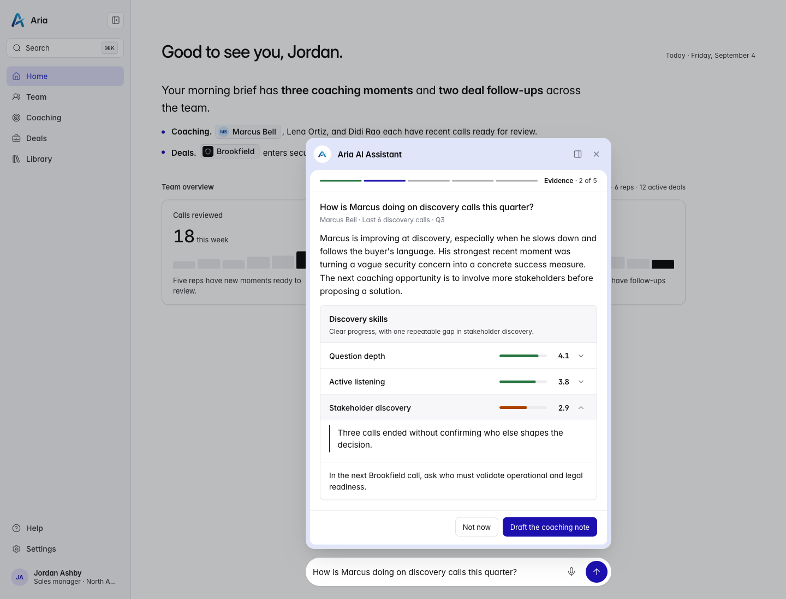
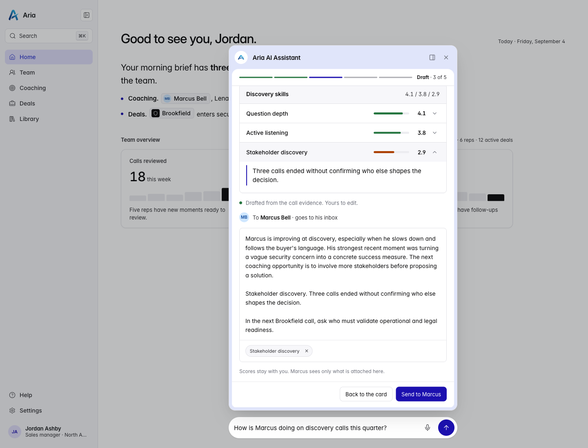
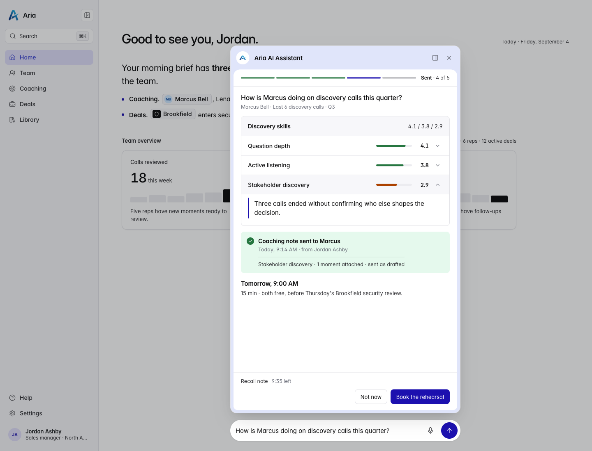
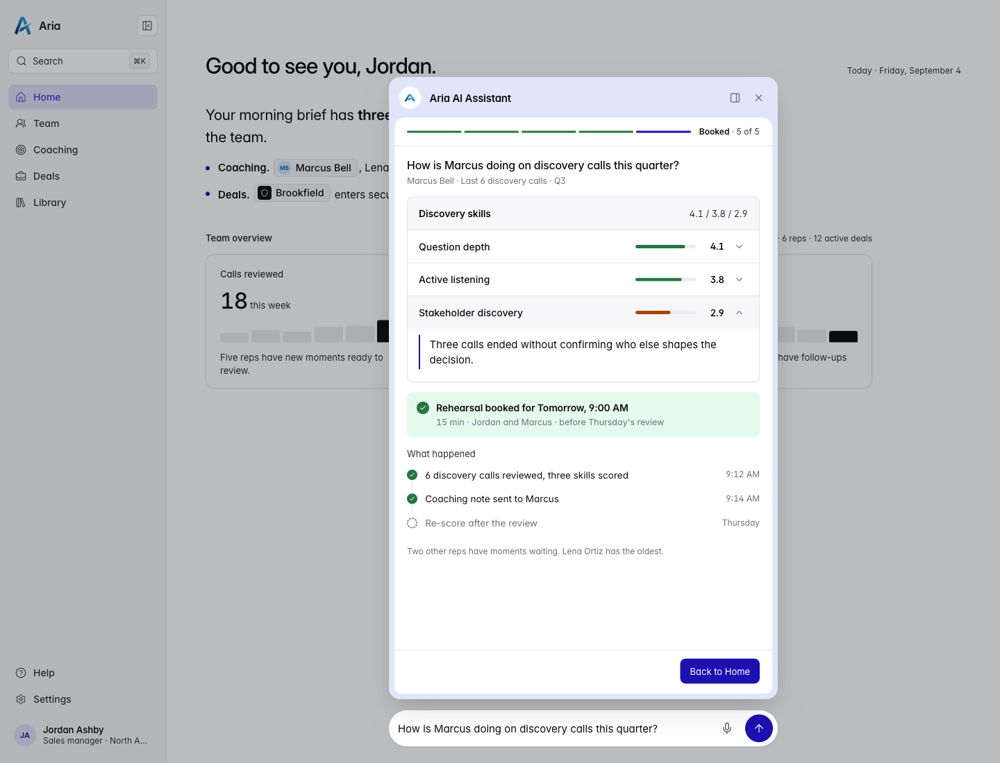
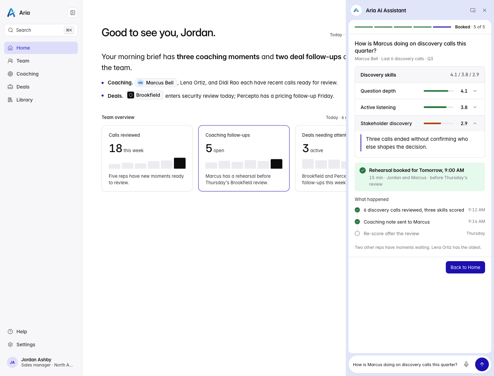

Aria Sales Hub
One question, then a sheet that grows from the composer.
Jordan Ashby manages a sales team at Aria, a fictional company that sells autonomous-drone security systems. She asks the assistant how Marcus Bell is doing on discovery calls this quarter. Marcus is one of her reps, and he is working the Brookfield public-safety deal.
The stills below are the same path, one stage at a time. The recording above is the motion, including the dock and the close.
Where the assistant appears
The entry point is the composer already on every page, centered at the bottom. The answer uses that same width and grows upward, so the reply feels like it came out of the question Jordan just sent. A quiet indigo tint frames the white content on the left, right, and bottom. The header is one line, “Aria AI Assistant,” with the Aria mark in a white circle, a dock control, and dismiss.
Live preview of the built app. To run it locally, clone this repository, install, and start the dev server.
git clone https://github.com/Shafeeq-ux/design-engineer-take-home-v3npm installnpm run dev
Five stages, one action at a time
A spine replaces the stage name as Jordan moves forward. The footer holds a single primary action. Nothing is sent until she presses Send. The only data is the mock stream: Marcus Bell, the last 6 discovery calls, scores 4.1, 3.8, and 2.9, one evidence string per skill, and a next step about the Brookfield call.





The one interaction
Each score is a button. Opening it reveals the evidence string for that skill, and opening a second row closes the first. The first open is what moves the spine from Answer to Evidence. Stakeholder discovery carries the quote the draft attaches: three calls ended without confirming who else shapes the decision.
Dock, float, and close
On a desktop width, dock moves the sheet into a right sidebar in one measured trip. The same tint then frames the prompt on all four sides, and Home stays usable beside it. Float brings the sheet back over the brief. Close, from the X or Escape, animates the sheet out and returns focus to the composer. Opening again always starts floating. On a phone there is no dock control. The sheet sits above the composer.

Accessibility and reduced motion
The sheet is a dialog. Every action is a button, and Tab keeps a visible ring on those controls. Focus lands on Close when the sheet opens, and on Back to Home after booking, without a ring until the next Tab. The answer block and the receipt heading stay out of that ring. One polite live region announces the review status and a single summary of the three scores, not each streamed sentence. Escape closes from any stage and focus returns to the composer. When reduced motion is on, the stages still appear and the stream finishes sooner. The sheet, the dock, and the close do not travel.
Left out on purpose
- No second rep. Another question returns this same mock answer, so there is no shortcut to Lena or anyone else.
- No calendar. Tomorrow at 9:00 AM was already free for both of them, so booking is one confirmation.
- No extra dataset. The scores, quotes, and next step are the mock stream only. A team benchmark beside each score would need numbers this payload does not have.